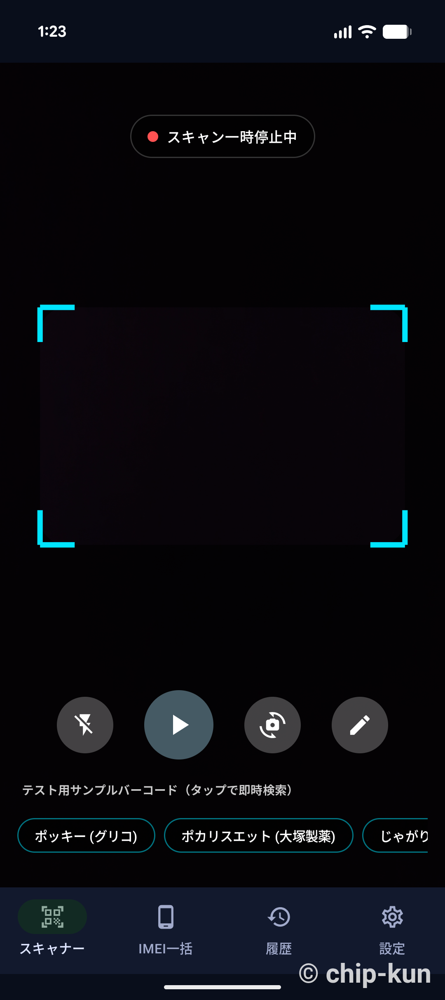
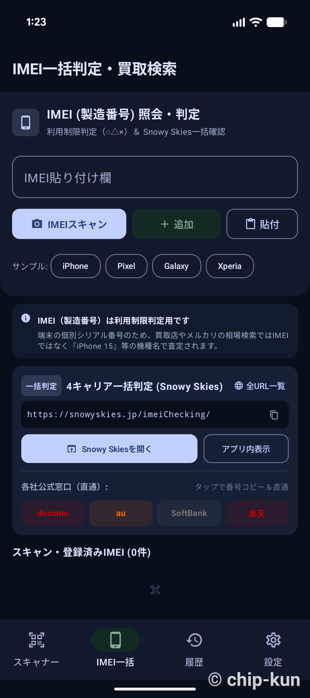
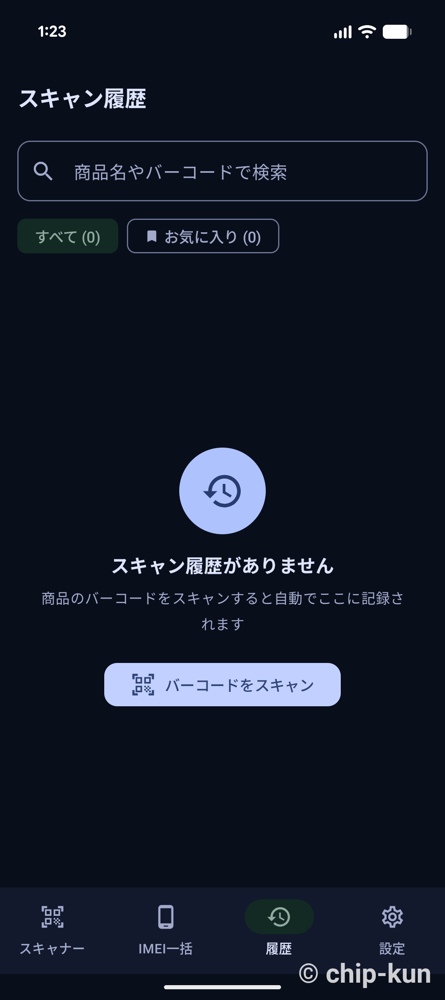
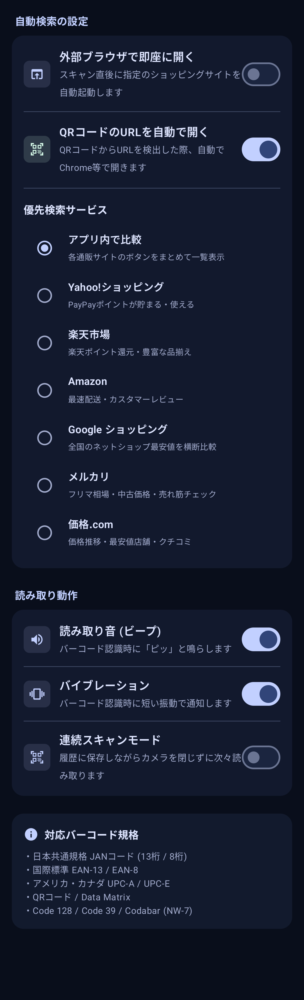

First App
バーコードをかざすだけでECサイトの価格比較ができるスキャナー機能や、スマートフォンのIMEI（製造番号）からネットワーク利用制限を各キャリア一括で判定できる便利なツールアプリです。
Android用 APKをダウンロード主な機能と画面紹介
1. 高速バーコードスキャン
カメラをかざすだけでJANコードなどのバーコードを瞬時に読み取ります。テスト用にポッキーやポカリスエットなどのダミーボタンも用意しています。

2. IMEI一括判定・買取検索
スマートフォンの製造番号（IMEI）を入力、またはカメラでスキャンすることで、各携帯キャリア（docomo, au, SoftBank, 楽天）の利用制限をまとめて一括照会できます。

3. スキャン履歴管理
過去に読み取ったバーコードのデータは自動的に履歴に保存されます。キーワード検索や、よく使う商品のお気に入り登録機能も備えています。

4. 充実したカスタマイズ設定
スキャン直後に外部ブラウザ（Amazonやメルカリ等）で即座に開く自動検索設定や、読み取り時のバイブレーション、連続スキャンモードなど、お好みに合わせて動作を変更できます。

インストール手順
- 「Android用 APKをダウンロード」ボタンをタップします。
- ダウンロード完了後、スマホの通知やファイルマネージャーからファイルを開きます。
- 「インストール」をタップします。
💡 ご注意
Playストアを経由しないため、端末によっては「不明なアプリ」といった警告が出る場合があります。インストールを続行するには、ブラウザの設定で「提供元不明のアプリのインストール」の許可をオンにしてください。
Playストアを経由しないため、端末によっては「不明なアプリ」といった警告が出る場合があります。インストールを続行するには、ブラウザの設定で「提供元不明のアプリのインストール」の許可をオンにしてください。